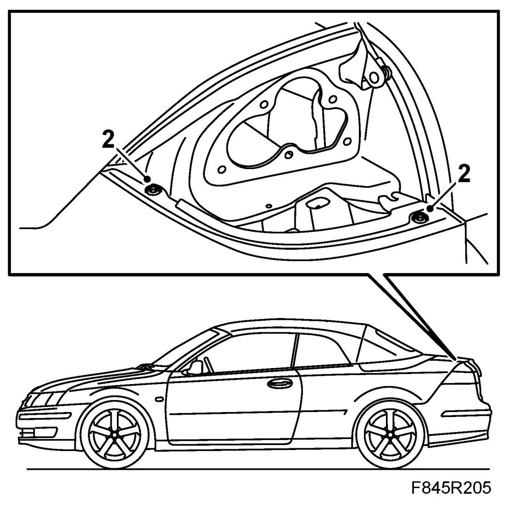
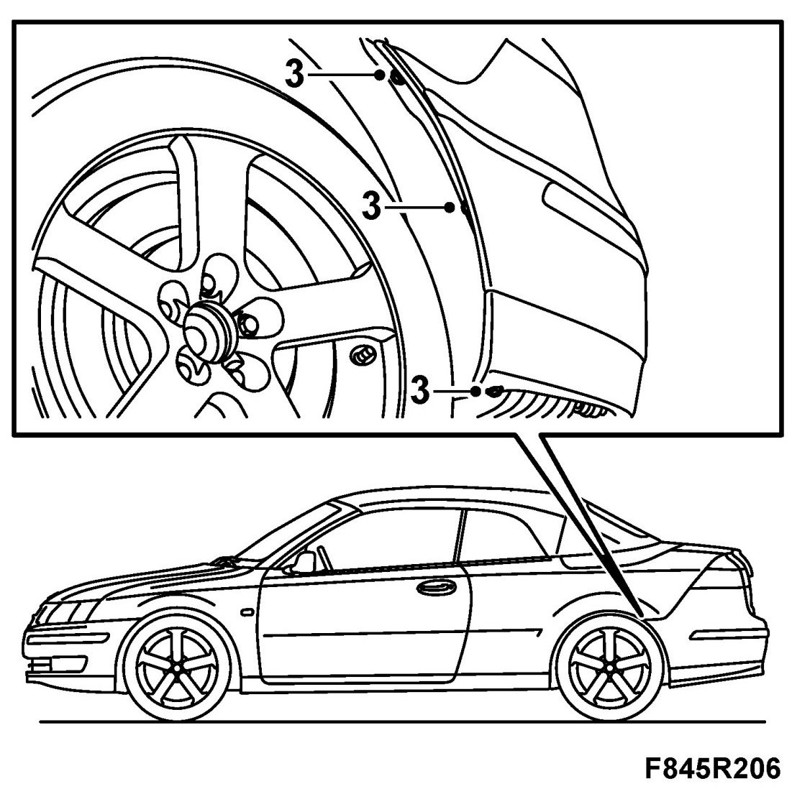
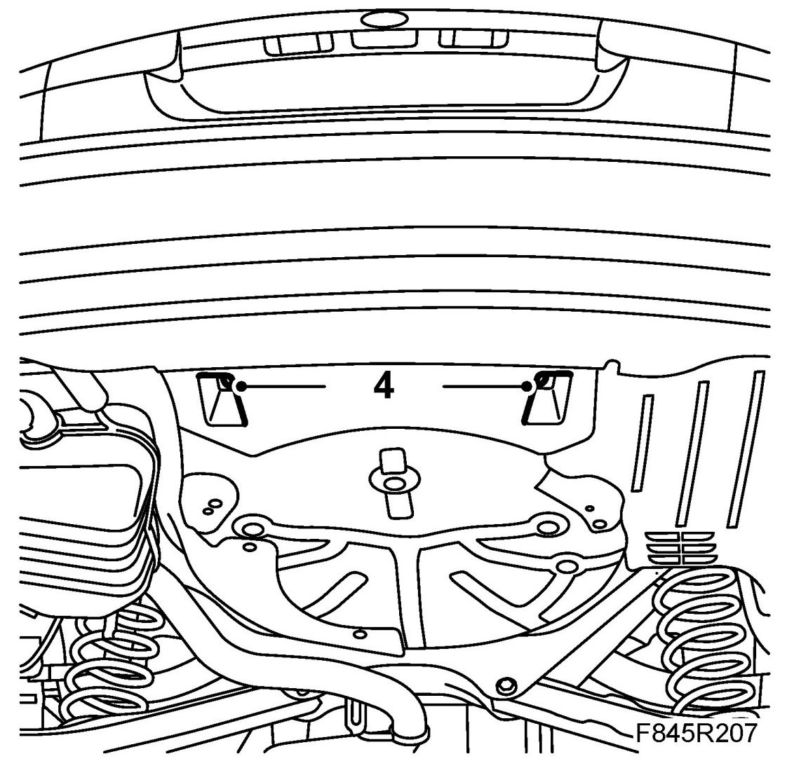
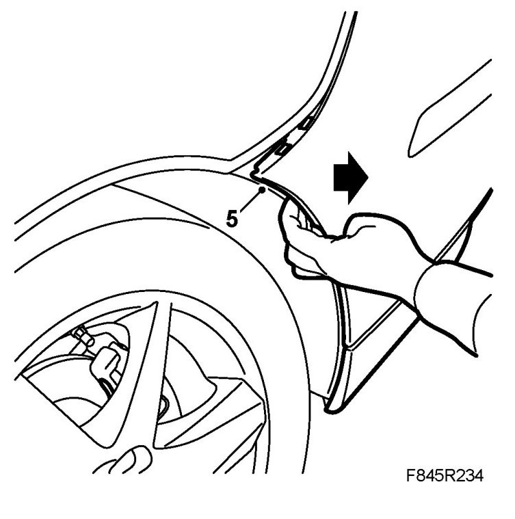
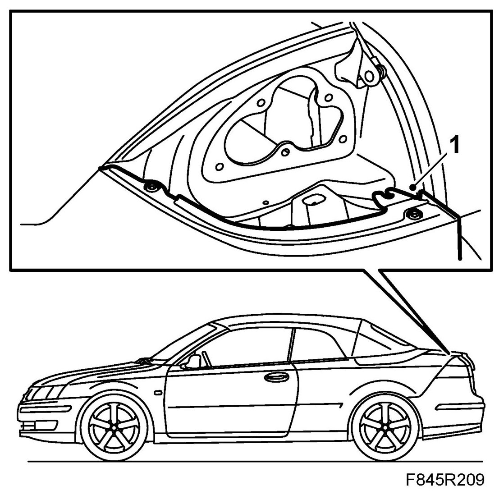
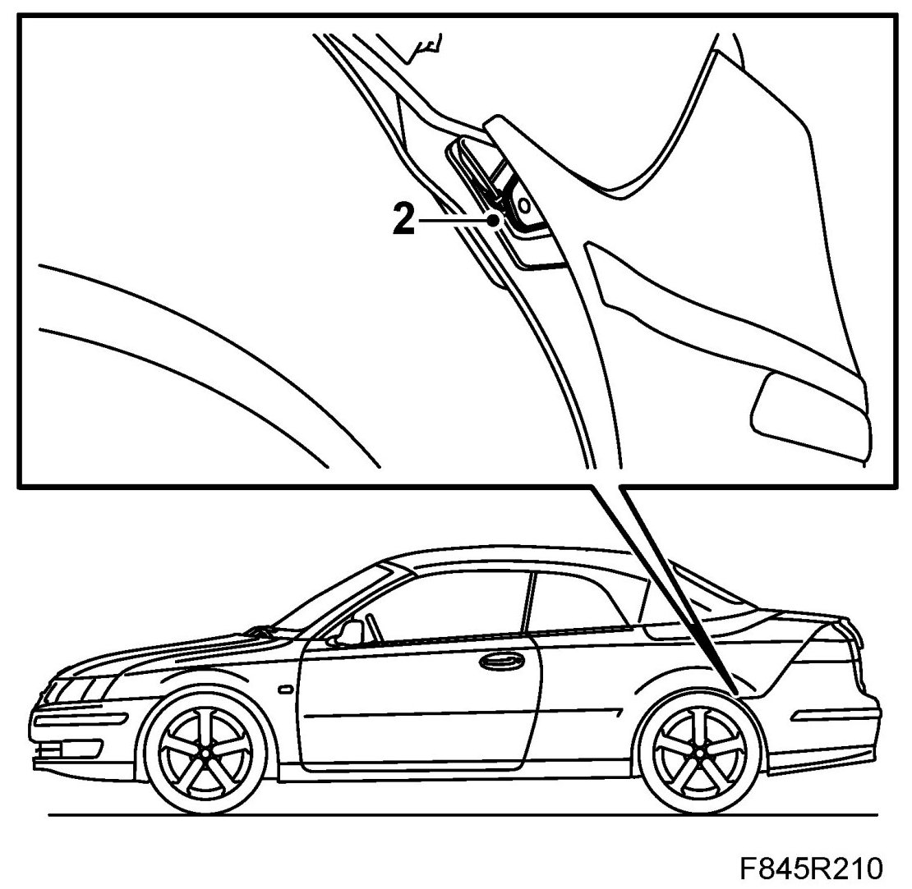
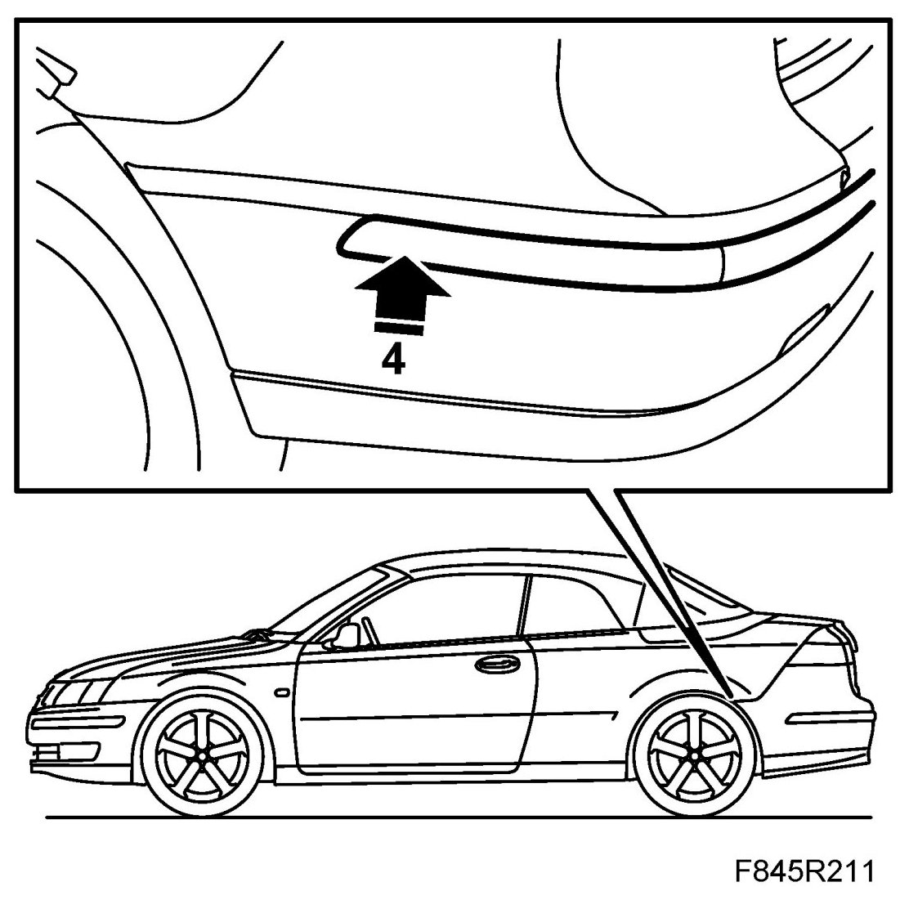
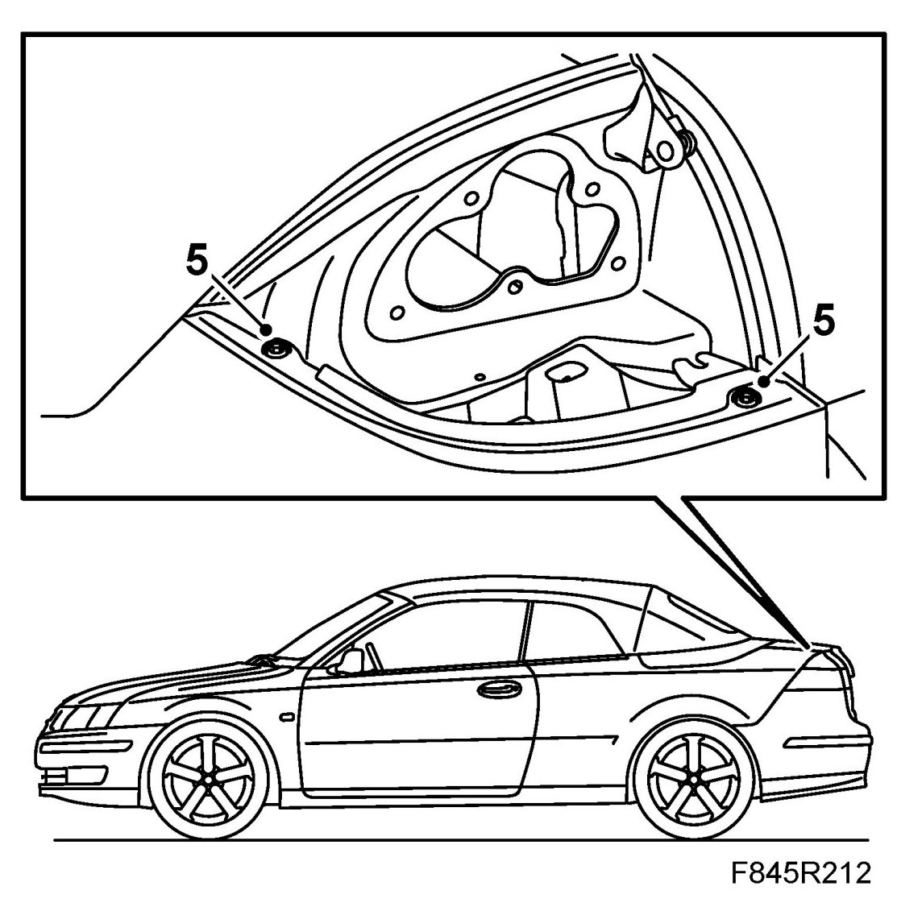
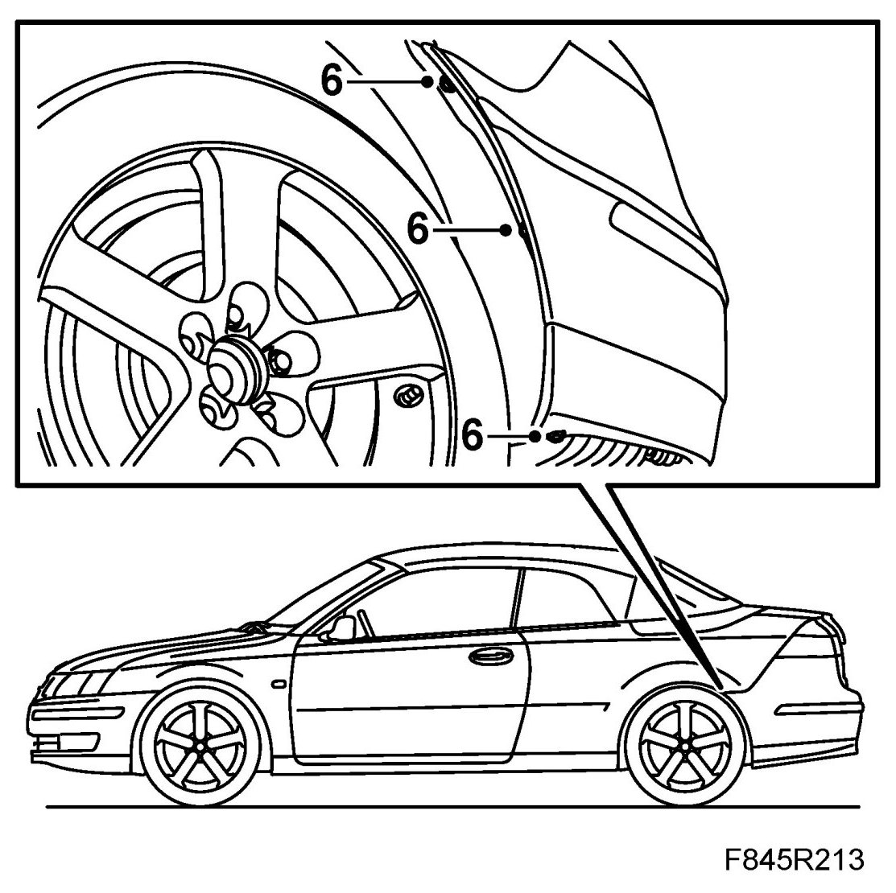
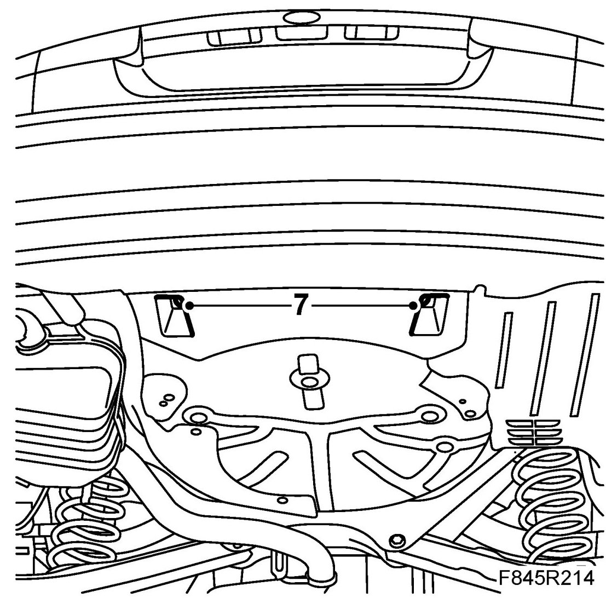

Rear Bumper Shell, CV
Rear Bumper Shell, CV
Removing
1. Remove the Tail lights, CV.
2. Remove the bolts under the tail light.

3. Remove the bolts at the wing liner.

4. Remove the plastic nuts on the underside of the bumper.

5. Pull the bumper shell corners loose from the holder mountings. Lift the shell aside.

Fitting
1. Place the bumper in fitting position. Make sure the mounting on the bumper's upper edge is inserted correctly into the holder.

2. Guide the bumper into the holder under the rear light cluster. Fasten the shell along the side panel.

3. When the final part of the bumper is pressed in, the mounting in the front section of the bumper must be lifted over the holder so that the bumper is positioned correctly between the holder and the wing liner.
4. Carefully fasten the inner bumper clip in near the beginning of the moulding.

5. Fit the bolts under the tail light.

6. Fit the bolts at the wing liner.

7. Fit and tighten the plastic nuts on the underside.

8. Fit the Tail lights, CV.